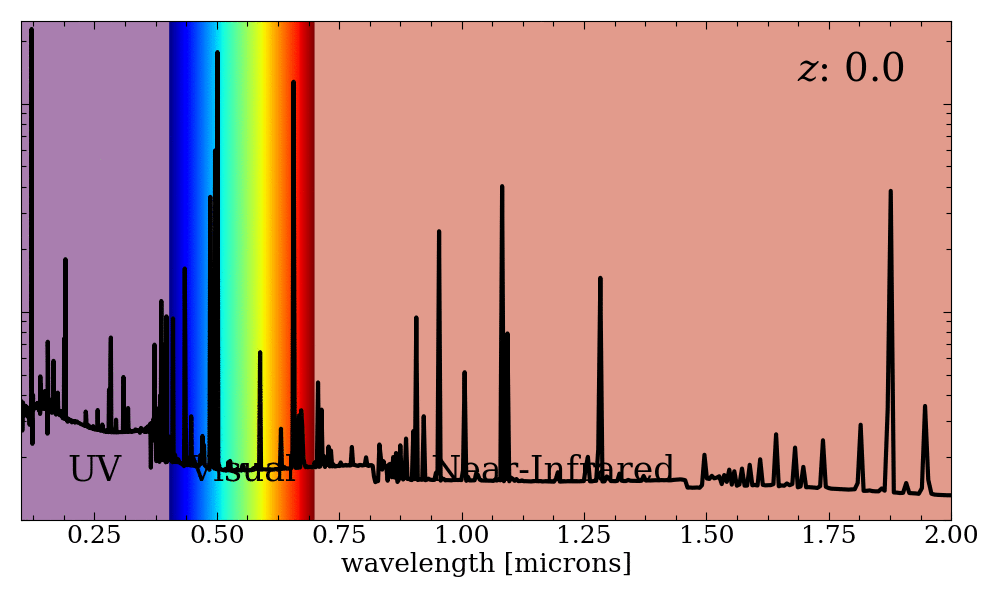

I. High-Redshift Astronomy
I work with galaxies that existed less than one billion years after the Big Bang, at redshifts of z > 5. To give an idea of how long ago that is, current cosmology places the age of the Universe at approximately 13.7 billion years old. These young galaxies are so distant that their rest-ultraviolet (rest-UV) emission lines have been redshifted into the near-infrared (NIR). To measure the rest-UV spectrum of these sources requires sensitive NIR spectrographs on some of the world's largest telescopes. We call this redshift range the "Epoch of Reionization".
 Want to see what this looks like? Here is a model galaxy spectrum redshifted according to the "z: #" in the top right corner. The further away a galaxy is from us, the larger the redshift – this effect simulateously shifts the spectrum of the galaxy and stretches it like an accordion. Starting at around z ∼ 6 and approaching higher redshifts, we enter into the Epoch of Reionization. For galaxies at these distances, the light emitted in the UV (that we would see in the UV if the galaxy was at z = 0) is seen in the NIR. (If you like this figure, check out how I made it here!)
For years, the Lyα line (λ
o = 1216Å) has been used as a tracer to locate high redshift galaxies (
z > 5). Due to its proclivity for high energy emission, it is seen as one of the only successful methods for identifying Lyα Emitters (LAEs) at redshifts higher than
z = 6. Unfortunately, it is not a robust indicator of the systemic redshift of the sources due to the attenuation of neutral Hydrogen in the Intergalactic Medium (IGM) during the Epoch of Reionization (
z ∼ 10–6). Therefore, while accurate within accepted errors, the spectroscopic redshift measurements of Lyα emission tend to be off by hundreds of km/s.
Some of my research involves measuring the CIII] λλ1907,1909Å emission in previously-identified (via Lyα) galaxies at
z > 7. By comparing the two measurements, we can determine if CIII] can be a robust tracer of high-redshift galaxies, providing a systemic redshift measurement as well as other insight into the dynamics of these young galaxies. Some of the data I've used comes from multiple years of Keck+MOSFIRE data.